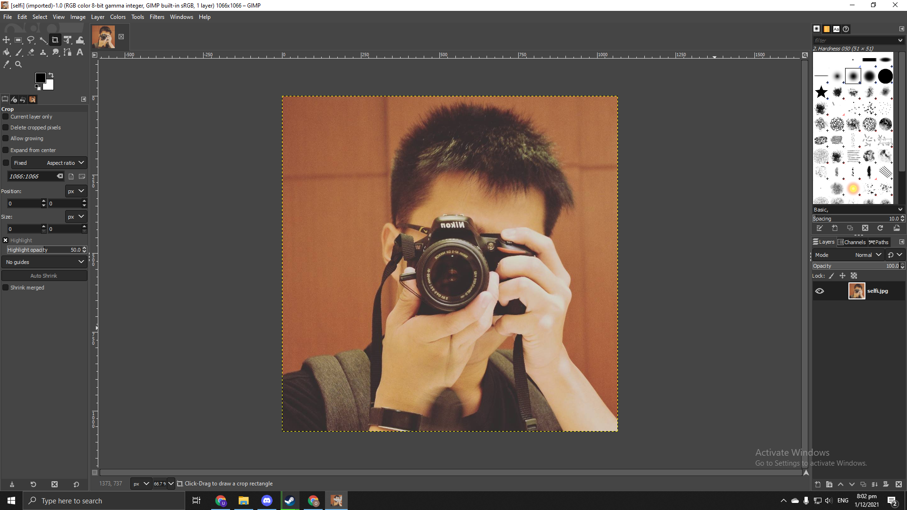
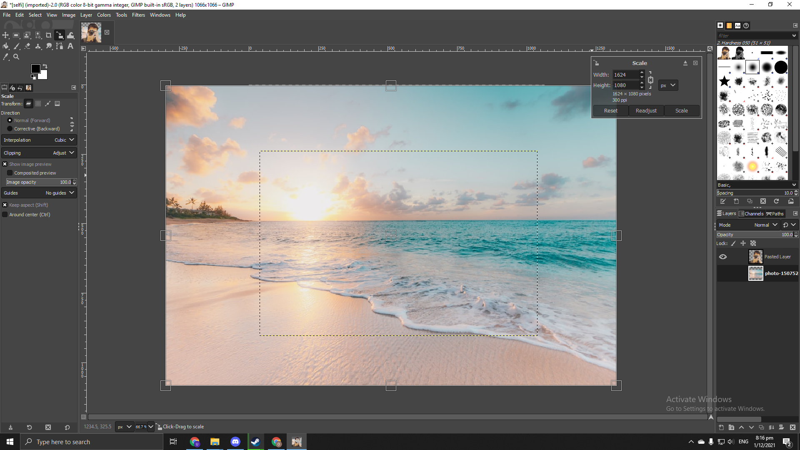

This video shows you how my logo is created using Vectr before creating the logo, I watched skim through a video tutorial
on logo creation using vectr.
About Vectr
Vectr is a free graphics program that allows you to make vector images quickly and effortlessly. It's a simple yet powerful cross-platform web and desktop application for bringing your ideas to life.
Vectr can be used to create clean and crisp logos of any scale and can is easy to learn from just a simple youtube video.
Using Gimp to remove background
This is to show how I used Gimp to change the background from my selfi. Get to know your tools before you start working!
\
Importing the photo in is as easy as dragging it in!
Remember to export your photo as .png once you finish your work.
Shift+Middle mouse key to zoom in
Middile mouse key scroll up or down
You are going to use Shift+O a lot
Step 1

Import your image by dragging it in.
Step 2
Under Color tools, select "select by color(shift+o)" select and cut out the background
Step 3

Import the background by dragging it in and use the scaling too(Shift+S) to scale the image to your liking.
Step 4
If done correctly, the background layer should be behind your selfie giving the photo a new background. If the background appears before the selfie, move the layer back in the layer selection menu.